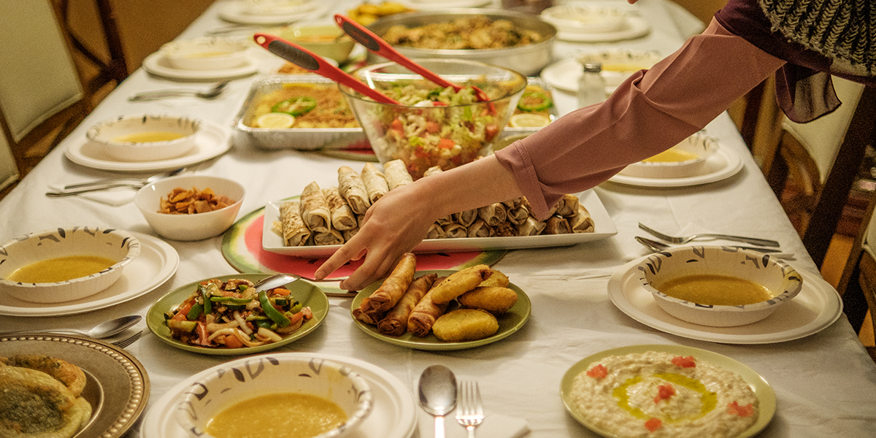
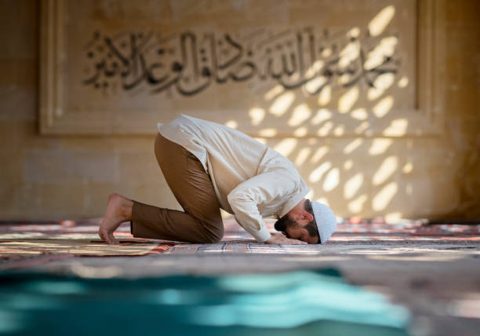
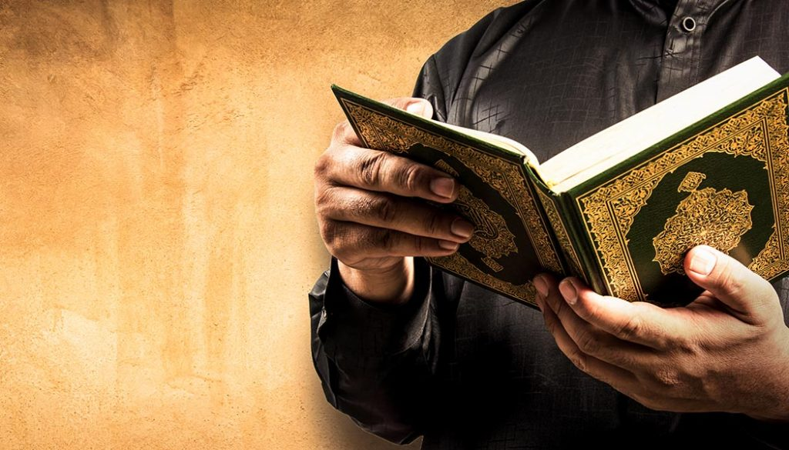
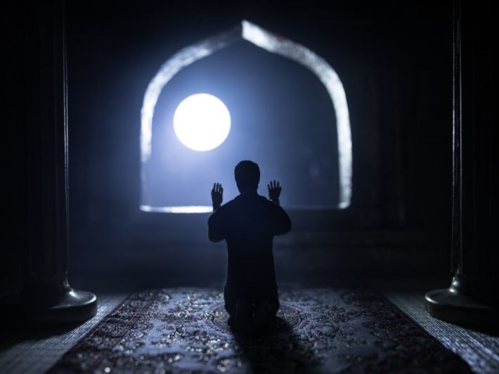
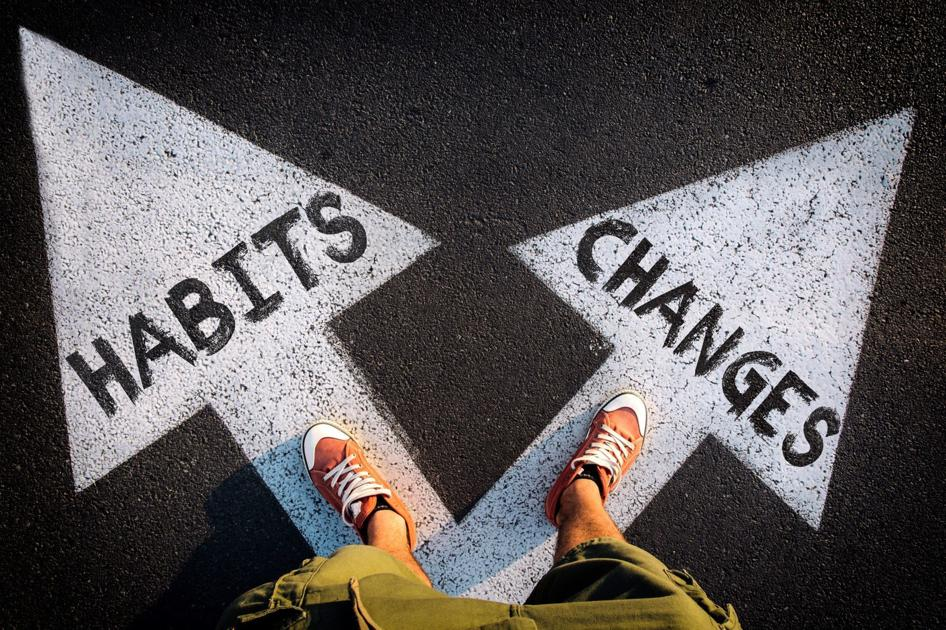

Is Ramadan Fasting from Foods and Drinks ???

Ramadan is not only fasting from food and drinks !
Ramadan is also fasting from limbs
What Does this means ?
Whatever God has forbidden of sins, this is fasting.
He should not touch with his hand what God has forbidden,
nor should he touch with his mouth what God has forbidden,
nor should he look with his eyes at what God has forbidden,
nor should he walk with his foot toward what God has forbidden.
And do what Our God Loves.




Change your Bad Habits and Replace Them With Good Habits